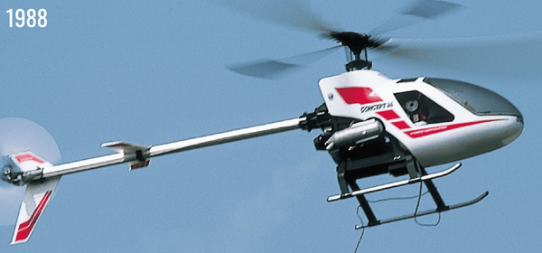

京商 コンセプト30シリーズ

引用元画像：京商60年の歩み
📋 基本情報
| メーカー | 京商（Kyosho） |
|---|---|
| 機種名 | コンセプト30シリーズ（Concept 30 Series） |
| シャーシ略称 | コンセプト30 |
| 型番 | Concept 30（基本モデル）、Concept 30 DX、Concept 30 SR など |
| 発売時期 | 1988年 |
| 価格 | 詳細不明 |
| 生産状況 | 生産終了 |
| カテゴリー | ラジコンヘリ（R/Cヘリコプター） |
| サブカテゴリー | 30クラス エンジンヘリコプター |
| シリーズ | 京商初のR/Cヘリコプター |
📏 機体スペック
| メインローター径 | 約1,200mm（推定） |
|---|---|
| 全長 | 約1,000mm（推定、テールブーム含む） |
| 全高 | 詳細不明 |
| 全備重量 | 約2,500-3,000g（推定、エンジン・電装品含む） |
| メインフレーム | ガラス強化プラスチック（GRP）+ アルミ合金 |
| メインシャフト | アルミ合金製 |
| ランディングギア | スキッド型（耐衝撃設計） |
⚙️ 駆動系
| エンジン | 0.30クラス ニトロエンジン（グロー燃料） 推奨：O.S. Max 32 など |
|---|---|
| 始動方式 | プルスターター または スターターシャフト |
| クラッチ | 遠心クラッチ（オートローテーション対応） |
| 冷却 | ファンシュラウド付き強制空冷 |
| 燃料タンク | バランス重視配置 |
| マフラー | チューンドマフラー（性能・音質調整可能） |
🔧 ローター・制御系
| ローターヘッド | ベル・ヒラー式（Bell-Hiller Pitch Control） インラインフライバー搭載 |
|---|---|
| フライバー | アルミ製フライバーパドル（DXモデル） ※重量調整で初心者向けセッティング可能 |
| メインブレード | コンポジット材料製（高性能・高耐久） アルミ製ローターブレード（DXモデル） |
| テールローター | ベルトドライブ式 2タイプ選択可：ベアリング式 / ベアリングレス式 |
| スワッシュプレート | メタルボール搭載（ガタなしリンケージ） |
| サーボ | 5サーボ（エルロン×2、エレベーター、ピッチ、テール） 推奨：ミニサーボ |
| ジャイロ | レートジャイロ（初期モデル） ※後期にヘディングホールドジャイロ対応 |
💡 特徴
京商初のR/Cヘリコプター - 元F3C世界チャンピオン設計
- 1988年、京商初のR/Cヘリコプターとして登場
- 元F3C（アクロバティックヘリコプター）世界チャンピオン、多屋淳氏が設計
- 画期的な飛ばしやすさで市場を席巻し、たちまち人気沸騰
- R/Cヘリ市場に京商が本格参入した記念碑的モデル
初心者からエキスパートまで対応する設計思想
- 多屋氏は「エキスパート向けに良好なコントロール性を持つ機体を設計し、初心者向けには重いフライバーパドルでデチューンする」という独創的な設計思想を採用
- DXモデル：アルミ製フライバーパドルとアルミ製ローターブレードで工場出荷
- フライバーパドルの重量調整により、初心者でも安定した飛行が可能
- エキスパートは軽量パドルに交換することで、機敏なアクロバット飛行を実現
高品質な機械設計と豊富なベアリング
- 強固なガラス強化プラスチック製メインフレーム
- アルミ合金製メインシャフト（高剛性・高精度）
- スワッシュプレートにメタルボール採用（ガタなしリンケージ）
- ベルトドライブ式テールローター（効率的な動力伝達）
- 豊富なボールベアリング搭載（低フリクション）
オートローテーション対応と安全設計
- オートローテーションクラッチ標準装備（エンジン停止時の安全着陸）
- 耐衝撃性の高いランディングギア
- キャノピーマウントは衝撃吸収設計（クラッシュ時の機体保護）
- モジュラーレイアウトでメンテナンスとアクセスが容易
リアエンジン配置の特徴
- エンジンをリア（後方）に配置した独自のレイアウト
- スターターエクステンション（延長軸）が必須だが、ベルトスターター式よりも機体へのダメージが少ない
- 重量バランスが良好で、安定した飛行特性
- 燃料タンクはバランス重視で戦略的に配置
豊富なバリエーションとスケールボディ
- Concept 30 DX：フル装備のデラックスバージョン
- Concept 30 SR：スポーツレーサー仕様
- EP Concept：電動バージョン（後継モデル）
- Hughes 500、JetRanger、Bell 222などのスケールボディを用意
- 「ハングオン」方式のボディ設計（メカとボディを分離、クラッシュ時の保護に有効）
アップグレードパーツの充実
- Zeal Z-31 HP Flapping Head：フラッピングヘッド公式アップグレード（2枚のブレードホルダーを連動させる機構）
- NHP Tail rotor pushrod upgrade：リアマウント式テールサーボアップグレード（ダイレクトなテールコントロール）
- 豊富なアフターマーケットパーツで性能向上が可能
🔧 ぽすとそに工房での修理実績
修理難易度
★★★★★（非常に困難）
絶版で、パーツがほぼ見当たらず、情報もほぼないため、修理は極めて困難です。
よくある故障・注意点
- エンジンメンテナンス不足による不調（グロープラグ交換、キャブレター調整が重要）
- クラッチライニングの摩耗（交換が必要、絶版のため入手困難）
- ベルトドライブ式テールローターのベルト劣化・破損
- メインブレードやフライバーパドルの破損（クラッシュ時）
- サーボギアの摩耗（ミニサーボの長時間使用）
- メインシャフトやベアリングの摩耗
- 燃料タンクやフューエルラインの劣化
- プラスチックパーツの経年劣化・破損
修理のポイント
- パーツ入手は極めて困難のため、他の30クラスヘリからの流用を検討
- メインブレードやテールブレードは汎用品（0.30クラス）で代用可能
- テールベルトは汎用サイズで代用可能
- グロープラグ、サーボは現代の製品に交換可能
- ジャイロは現代のヘディングホールドジャイロやFBL（フライバーレス）システムへの換装を検討
- 3Dプリンターでキャノピーポストやラジオトレイなどの破損パーツを自作
- CNC加工アップグレードパーツで耐久性と精度を向上
- エンジンは定期的なオーバーホール必須
- オリジナルパーツの保存が最優先
その他の特徴
- 京商初のR/Cヘリとして歴史的価値が非常に高いコレクターズアイテム
- 元F3C世界チャンピオン設計という背景が魅力的
- 1988年当時のR/Cヘリ技術の到達点を示す貴重な機種
- ベル・ヒラー式ローターヘッドは現代のFBLシステムとは異なる機械的な安定性を持つ
- 0.30クラスの汎用パーツ（ブレード、ベルト、グロープラグ、サーボ）は流用可能
- 現代のヘディングホールドジャイロやFBLコンバージョンで新しい飛行体験が可能
- ビンテージRCヘリフォーラム、スワップミート、オンラインオークションでパーツ探索が有効
- EP Concept（電動バージョン）も存在し、こちらも歴史的価値が高い